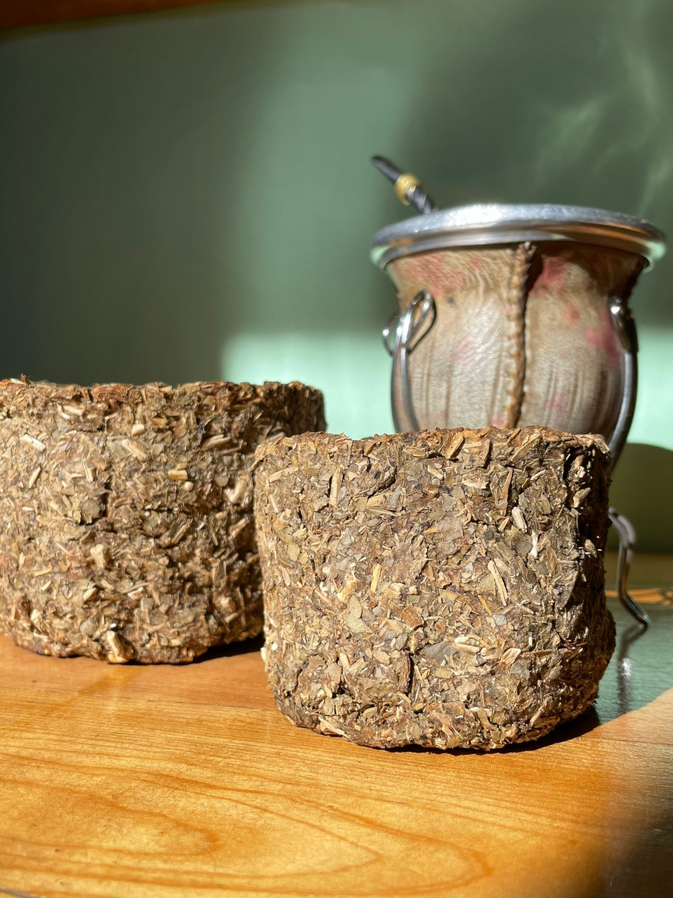

Este es el increible equipo que esta detras de las macetas Biopots buscando la sustentabilidad y la decoración al mismo tiempo.
¿Cuáles son nuestros principios e ideales?
Misión
Misión
Incentivar a la población a llevar una vida más sustentable y verde, ayudando al medioambiente. Reutilizando alimentos para transformarlos en futuras macetas para el hogar o plantines biodegradables. Promoviendo el amor y cuidado de las plantas, y concientizando el cómo uno puede relacionarse con la naturaleza.
Visión
Visión
Lograr comunicar la importancia de plantar más, en beneficio de nuestra salud y del ecosistema en el que vivimos. Expandiendo nuestra enseñanza hacia vecinos muy lejanos, para a su vez cuidar de ellos. Y poder crear una comunidad que se ayude mutuamente.
Valores
Valores
- Creemos en la solidaridad y la colaboración
- Fomentamos el cuidado del medioambiente
- Trabajamos con honestidad, integridad y esfuerzo por un mundo mejor
- Incentivamos el compromiso
Propósito
Propósito
- Fomento del crecimiento de las plantas
- Reducción de residuos dañinos contra el medioambiente
- Transmitir conciencia y responsabilidad ambiental
- Facilidad de transplante de plantas